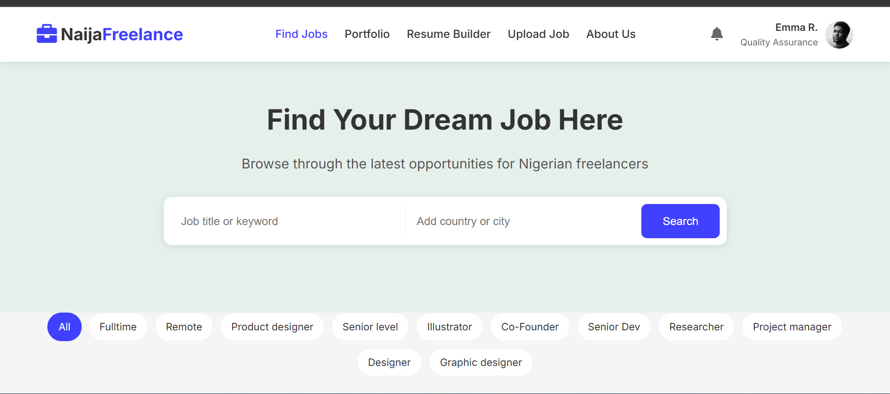

Project #01
MAR 2026
Naija Freelance
A job board platform connecting remote workers in Nigeria with remote job opportunities worldwide, featuring job listings, applications, and tailored resumes and cover letters.
HTML / CSS / JavaScript / Firebase
